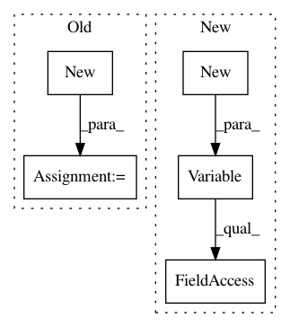

dafdc9b5cb8fa4c65285aad22b1429549d06d71a,networks/resample2d_package/functions/resample2d.py,Resample2dFunction,backward,#Resample2dFunction#Any#,27
Before Change
gradInput1 = input1.new().resize_(b,c,h,w).zero_()
b, c, h, w = input2.size()
gradInput2 = input2.new().resize_(b,c,h,w).zero_()
resample2d.Resample2d_cuda_backward(input1, input2, gradOutput, gradInput1, gradInput2, self.kernel_size)
return gradInput1, gradInput2
After Change
input1, input2 = ctx.saved_tensors
grad_input1 = Variable(input1.new(input1.size()).zero_())
grad_input2 = Variable(input1.new(input2.size()).zero_())
resample2d.Resample2d_cuda_backward(input1, input2, grad_output.data,
grad_input1.data, grad_input2.data,
ctx.kernel_size)
return grad_input1, grad_input2, None
In pattern: SUPERPATTERN
Frequency: 3
Non-data size: 5
Instances
Project Name: NVIDIA/flownet2-pytorch
Commit Name: dafdc9b5cb8fa4c65285aad22b1429549d06d71a
Time: 2018-02-04
Author: chenkaidev@gmail.com
File Name: networks/resample2d_package/functions/resample2d.py
Class Name: Resample2dFunction
Method Name: backward
Project Name: NVIDIA/flownet2-pytorch
Commit Name: dafdc9b5cb8fa4c65285aad22b1429549d06d71a
Time: 2018-02-04
Author: chenkaidev@gmail.com
File Name: networks/channelnorm_package/functions/channelnorm.py
Class Name: ChannelNormFunction
Method Name: backward
Project Name: cornellius-gp/gpytorch
Commit Name: f01591a685be78db2c440e8024895601017a5b72
Time: 2018-01-24
Author: gpleiss@gmail.com
File Name: gpytorch/lazy/matmul_lazy_variable.py
Class Name: MatmulLazyVariable
Method Name: _batch_get_indices